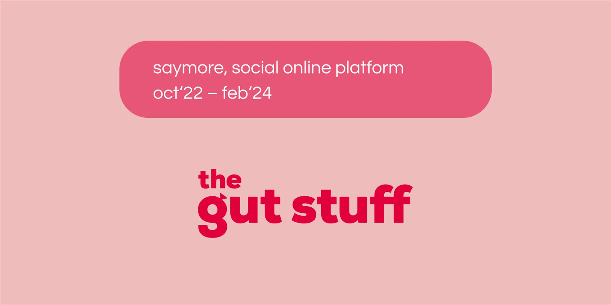
The Gut Stuff — мобильный трекер здоровья кишечникаThe Gut Stuff — gut-health mobile tracker
Android (Google Play), B2C, full-cycle: MVP → редизайн → прод · Окт 2022 — Ноя 2024Android (Google Play), B2C, full-cycle: MVP → redesign → prod · Oct 2022 — Nov 2024
1. Описание проекта1. Project overview
КонтекстContext
The Gut Stuff — британский health-бренд, основанный сёстрами-близнецами Аланой и Луизой Макфарлейн. Отправной точкой стал эксперимент в Королевском колледже Лондона: несмотря на 100% идентичный ДНК, микробиомы сестёр совпали лишь на 30–40%. Это объяснило разную реакцию на одну и ту же пищу — и стало миссией: дать каждому персональное знание о своём кишечнике.
На старте у бренда были соцсети и физпродукты (книги, добавки, мерч). Задача — цифровой продукт для ежедневного формата и новый канал монетизации.
The Gut Stuff is a British health brand founded by twin sisters Alana and Luisa Macfarlane. It started with a King's College London experiment: despite 100% identical DNA, the sisters' gut microbiomes matched only 30–40%. That explained their different reactions to the same food — and became the mission: give everyone personal knowledge of their gut.
At kickoff the brand had socials and physical products (books, supplements, merch). The task — a digital product for daily use and a new monetization channel.
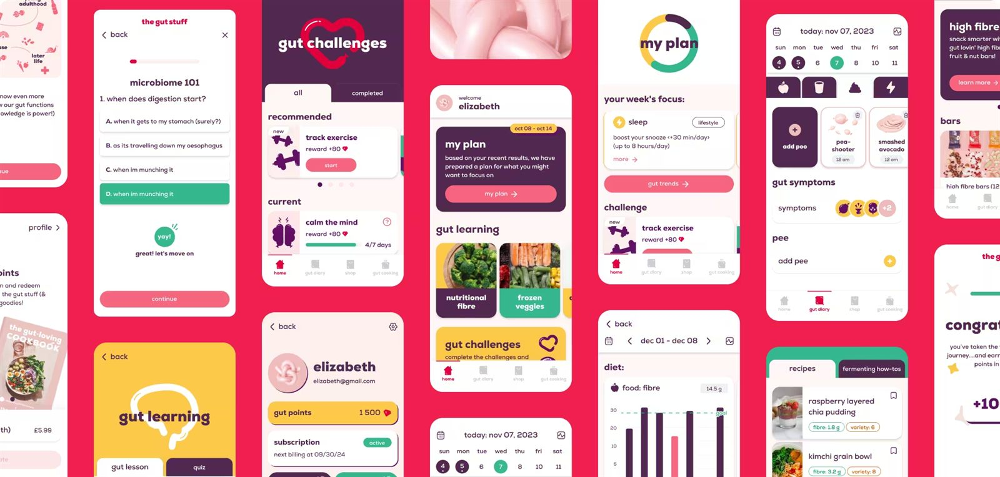
Целевая аудиторияAudience
Рынок цифрового здоровья кишечника — $2.41 млрд (2024), +17.2% в год. Ядро сегмента — здоровый, образованный человек с проактивным отношением к телу.
| Персона | Кто | Главная потребность |
|---|---|---|
| «Осознанный заботливый» | 25–40 лет, UK, ЗОЖ без фанатизма | Понять связь еды и самочувствия, персональные рекомендации |
| «С симптомами» | 28–45 лет, вздутие, ИБС, усталость | Отследить триггеры, почувствовать контроль над телом |
| «Любитель данных» | 30–45 лет, Fitbit / Apple Health | Видеть связи: сон, еда, стул, настроение |
The digital gut-health market is $2.41B (2024), +17.2% yearly. The core: healthy, educated, body-proactive people.
| Persona | Who | Core need |
|---|---|---|
| Conscious carer | 25–40, UK, casual wellness | Link food and wellbeing, personal tips |
| Symptomatic | 28–45, bloating, IBS, fatigue | Track triggers, feel in control |
| Data lover | 30–45, Fitbit / Apple Health user | See links: sleep, food, stool, mood |
КонкурентыCompetitors
Ни один крупный игрок не давал сфокусированного инструментария именно для здоровья кишечника — ниша с высоким спросом и низким предложением.
| Продукт | Фокус | Сильные стороны | Слабые стороны |
|---|---|---|---|
| Flo | Женский цикл | Персонализация, обучение, retention | Нет фокуса на кишечнике |
| Noom | Похудение | Привычки, коучинг | Дорого, только вес |
| Calm | Медитация, сон | NPS, дизайн, геймификация | Нет трекинга питания и симптомов |
| Lifesum | Питание | Дневник с БЖУ, удобный логинг | Нет симптомов, сна, стула |
| ZOE | Микробиом + тест | Наука, персонализация | Дорогой вход, нет бесплатного MVP |
Уязвимость рынка: никто не совмещает gut-трекинг + обучение + геймификацию в одном приложении по доступной подписке.
No major player offered focused gut-health tooling — high demand, low supply.
| Product | Focus | Strengths | Weaknesses |
|---|---|---|---|
| Flo | Female cycle | Personalization, learning, retention | No gut focus |
| Noom | Weight loss | Habits, coaching | Pricey, weight-only |
| Calm | Meditation, sleep | NPS, design, gamification | No food/symptom tracking |
| Lifesum | Nutrition | Macro diary, easy logging | No symptoms, sleep, stool |
| ZOE | Microbiome + test | Science, personalization | Expensive entry, no free MVP |
Market gap: nobody combines gut tracking + learning + gamification in one affordably subscribed app.
2. Постановка задачи2. Problem statement
ЦелиGoals
Бизнес:
- Новый цифровой доход на подписке (раньше — только физпродукты)
- Узнаваемость + продажи книг, добавок и мерча через магазин
- Перевод аудитории из соцсетей в свой продукт
Продукт:
- Привычка ежедневного трекинга через геймификацию и рекомендации
- Первая ценность за неделю — связь питания и самочувствия
- Обучение как инструмент удержания, а не только трекинг
Business:
- New subscription revenue (previously physical products only)
- Awareness + book/supplement/merch sales via in-app shop
- Move the audience from socials into our own product
Product:
- Daily-tracking habit via gamification and tips
- First value within a week — the food-wellbeing link
- Learning as retention, not just tracking
Боли пользователейUser pains
- «Непонятно, с чего начать» — хотят заботиться о кишечнике, но не знают, что отслеживать
- «Рутина ломается на 3–7 день» — без отдачи логинг становится обязанностью
- «Данные есть, смысла нет» — трекеры не интерпретируют данные
- «Нет кишечник-контента» — нужна верифицированная экспертиза о микробиоме
- «Стул — табу» — нужен продукт, говорящий о физиологии с юмором и без стыда
- “Don't know where to start” — want gut care, unclear what to track
- “Routine breaks on day 3–7” — without payoff, logging feels like duty
- “Data without meaning” — trackers don't interpret data
- “No gut-specific content” — need verified microbiome expertise
- “Stool is taboo” — need a product that talks physiology with humor, no shame
ГипотезыHypotheses
| # | Гипотеза | Статус |
|---|---|---|
| H1 | Квиз-онбординг повысит регистрацию и «персональность» | ✅ Подтверждена — опрос стал UX-якорем |
| H2 | Геймификация (челленджи + Points) поднимет retention и свяжет приложение с продажами | ✅ В проде: поинты = скидки в магазине |
| H3 | Еженедельный My Plan сформирует привычку возврата | ✅ Якорная фича V2 |
| H4 | Обучение повысит долгосрочную ценность | Количественно не проверена |
| # | Hypothesis | Status |
|---|---|---|
| H1 | Quiz onboarding will lift signup and “personal” feel | ✅ Confirmed — the quiz became the UX anchor |
| H2 | Gamification (challenges + Points) will lift retention and bridge to merch sales | ✅ Live: points convert to shop discounts |
| H3 | Weekly My Plan will build return habits | ✅ Anchor feature of V2 |
| H4 | Learning will raise long-term value | Not measured quantitatively |
Метрики успехаSuccess metrics
| Метрика | Цель | Факт |
|---|---|---|
| Загрузки (Google Play) | — | 10 000+ |
| Completion квиза | > 80% | ~80%+ (бенчмарк квизов с прогресс-баром) |
| Metric | Target | Actual |
|---|---|---|
| Downloads (Google Play) | — | 10,000+ |
| Quiz completion | > 80% | ~80%+ (progress-bar quiz benchmark) |
3. Команда и обязанности3. Team
Agile по Scrum, спринты по 2 недели.
| Роль | Кол-во | Зона ответственности |
|---|---|---|
| UX/UI Designer (Lead — я) | 1 | Исследования, архитектура, wireframes, ДС, прототипы, ревью |
| UX/UI Designer | 1 | Графика, иллюстрации, анимации |
| Product Manager | 1 | Стратегия, бэклог, клиент |
| Backend | 2 | API, логика (RoR, PostgreSQL, GraphQL) |
| Mobile | 2 | Android на React Native + Apollo |
| QA | 1 | Тесты, регрессия, баги |
| DevOps | 1 | CI/CD, деплой (Fastlane) |
Моя зона: MVP — весь дизайн с нуля единолично; предпроектное обсуждение с разработкой; V2 — декомпозиция, план выдачи с оценками под 6-месячный дедлайн; менторинг джуна; Lottie-анимации; дизайн-система и приёмка.
Agile Scrum, 2-week sprints.
| Role | Qty | Scope |
|---|---|---|
| UX/UI Designer (Lead — me) | 1 | Research, architecture, wireframes, DS, prototypes, reviews |
| UX/UI Designer | 1 | Graphics, illustrations, animations |
| Product Manager | 1 | Strategy, backlog, client |
| Backend | 2 | API, logic (RoR, PostgreSQL, GraphQL) |
| Mobile | 2 | Android in React Native + Apollo |
| QA | 1 | Testing, regressions, bugs |
| DevOps | 1 | CI/CD, deploy (Fastlane) |
My scope: MVP — all design solo from scratch; pre-design dev alignment; V2 — decomposition, estimated delivery plan for the 6-month deadline; junior mentoring; Lottie animations; design system and acceptance.
4. Описание фич4. Features
Архитектура приложенияApp architecture
Шесть модулей вокруг Home как точки ежедневного входа.
Six modules around Home as the daily entry point.
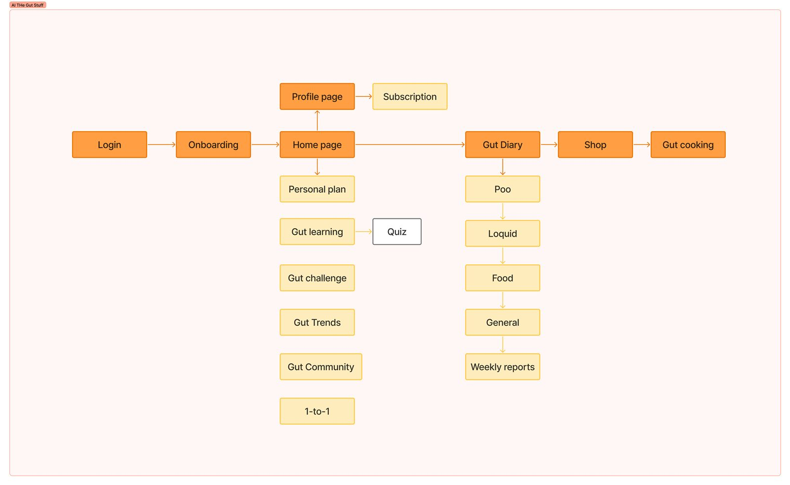
Онбординг (Onboarding)Onboarding
Квиз собирает цели, симптомы, диету и режим дня — алгоритм формирует стартовую программу.
Решения: прогресс-бар против оттока; «неудобные» темы с визуальным юмором; анимированные переходы — ощущение «живого» продукта.
A quiz collects goals, symptoms, diet and routine — the algorithm builds the starter program.
Decisions: progress bar against drop-off; “awkward” topics with visual humor; animated transitions for a “living” product feel.
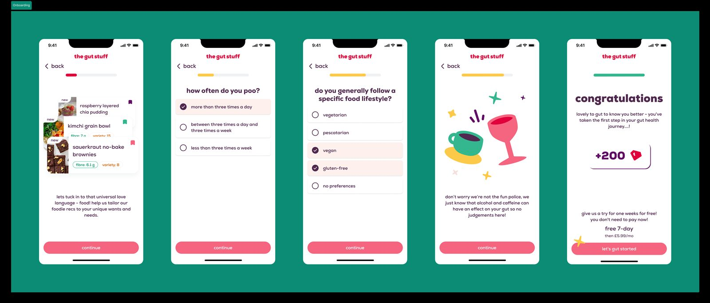
Gut Tracker — дневник здоровьяGut Tracker — health diary
Ядро daily-использования. 10 категорий:
| Категория | Что фиксирует |
|---|---|
| 💩 Poo | Частота, консистенция по Бристольской шкале |
| 💧 Water | Жидкость |
| 🥗 Food | Еда, калории, клетчатка |
| 😴 Sleep | Часы сна |
| 🏃 Exercise | Активность |
| 😰 Stress | Уровень стресса |
| 😮 Symptoms | Вздутие, боль, дискомфорт |
| 🧘 Me Time | Время для себя |
| 🙏 Gratitude | Благодарность |
| 🔍 Gut Discoveries | Наблюдения о теле |
Почему 10, а не 3–4: микробиом чувствителен к системным факторам — сон, стресс и движение влияют не меньше еды. Полный трекинг даёт алгоритму данные для нетривиальных инсайтов.
The daily-use core. 10 logging categories:
| Category | Logs |
|---|---|
| 💩 Poo | Frequency, Bristol-scale consistency |
| 💧 Water | Fluids |
| 🥗 Food | Meals, calories, fiber |
| 😴 Sleep | Sleep hours |
| 🏃 Exercise | Activity |
| 😰 Stress | Stress level |
| 😮 Symptoms | Bloating, pain, discomfort |
| 🧘 Me Time | Time for yourself |
| 🙏 Gratitude | Gratitude practice |
| 🔍 Gut Discoveries | Body observations |
Why 10, not 3–4: the microbiome responds to systemic factors — sleep, stress and movement matter as much as food. Full tracking feeds the algorithm non-trivial insights.
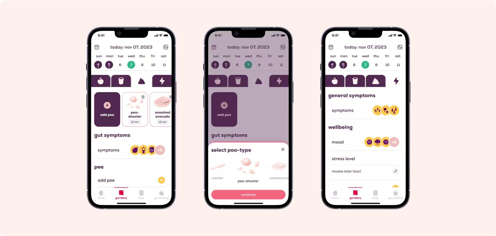
My Plan — персональный недельный планMy Plan — weekly personal plan
Обновляется еженедельно по данным трекера: тренды, тревожные сигналы, рекомендации. Каждая метрика — с графиком, привязкой к челленджу или статье.
Ключевая retention-фича: возврат в понедельник за «своим планом» — ритуал и ощущение сопровождения.
Refreshes weekly from tracker data: trends, red flags, tips. Every metric ships with a chart linked to a challenge or article.
Key retention feature: the Monday return for “my plan” — a ritual with a sense of guidance.
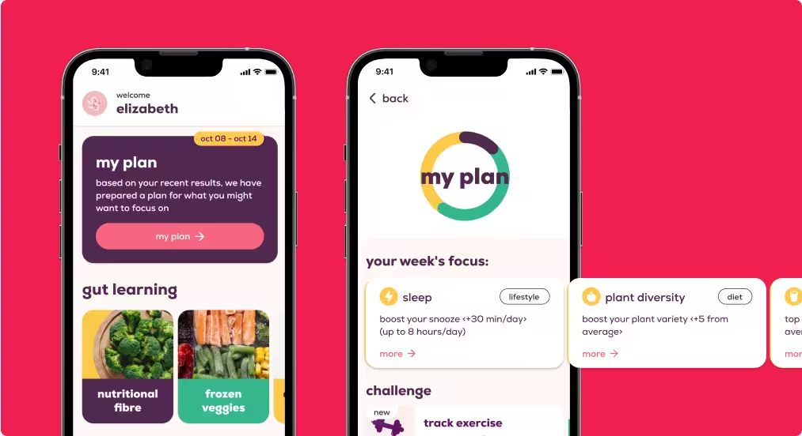
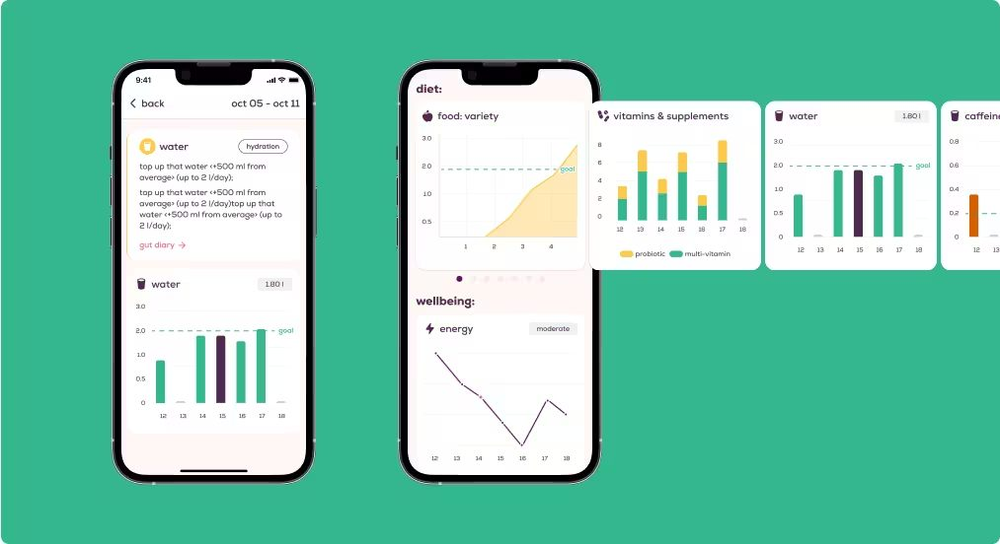
Gut Challenges — геймификация привычекGut Challenges — habit gamification
Алгоритм назначает челленджи по данным трекера. Награда — Gut Points со скидками на товары бренда: удержание + продажи книг, добавок и мерча.
Механика: прогресс-бар в челлендже + анимация завершения — reward loop как дофаминовый триггер возврата.
The algorithm assigns challenges from tracker data. Rewards — Gut Points redeemable for brand-merch discounts: retention + book/supplement/merch sales.
Mechanics: in-challenge progress bar + completion animation — a reward loop as a dopamine return trigger.
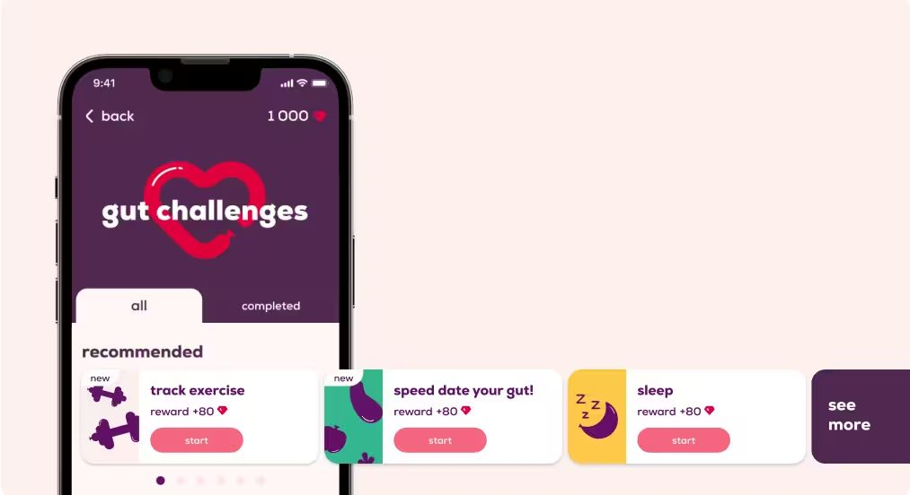
Gut Learning — образовательный хабGut Learning — education hub
Статьи, видео и квизы по темам (микробиом, питание, сон, ферментация), персонализированы по трекеру.
Решение: формат «урок → квиз → badge» из EdTech (Duolingo-механика) — мгновенное подкрепление через мини-тест.
Articles, videos and quizzes by topic (microbiome, nutrition, sleep, fermentation), personalized from tracker data.
Decision: “lesson → quiz → badge” borrowed from EdTech (Duolingo mechanics) — instant reinforcement via mini-test.
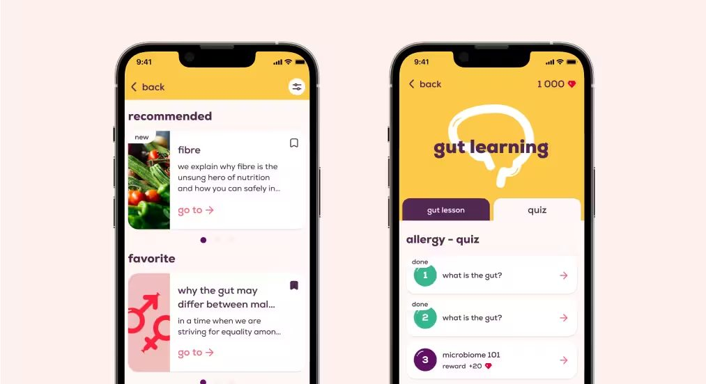
Gut Cooking — база рецептовGut Cooking — recipe base
Gut-friendly рецепты: клетчатка, ферменты, пребиотики. Порция автоматически логируется в трекер питания.
Gut-friendly recipes: fiber, ferments, prebiotics. A serving auto-logs into the food tracker.
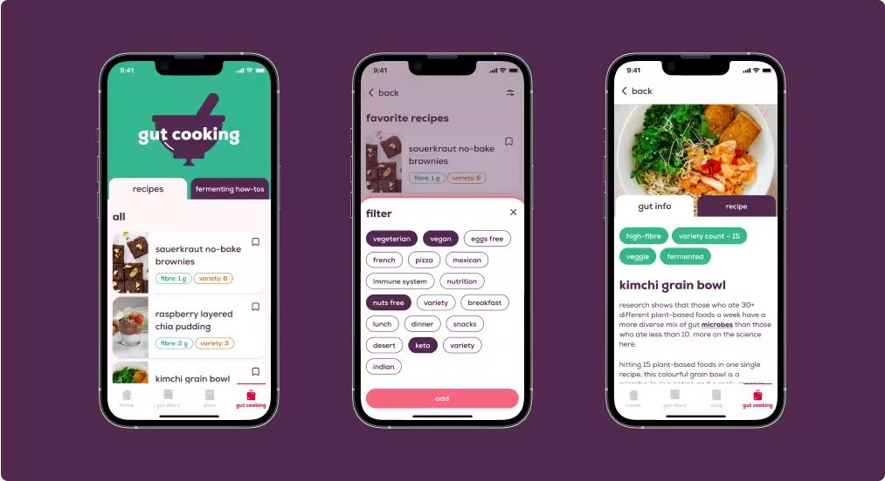
Магазин (Shop)Shop
E-commerce физпродуктов бренда с главного экрана — интеграция с брендовым revenue-потоком.
Brand-merch e-commerce from the home screen — plugged into the brand revenue flow.
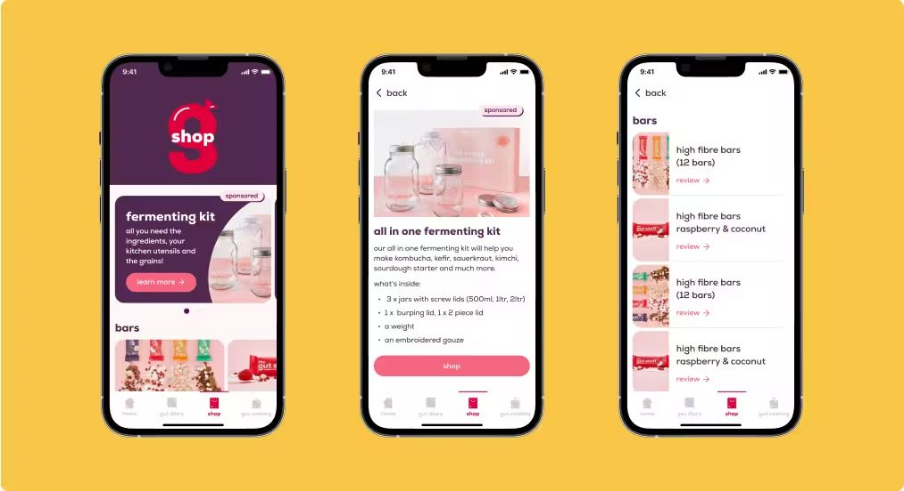
5. Ограничения5. Constraints
ВременныеTime
| Фаза | Срок | Задача |
|---|---|---|
| MVP | 1 месяц | Всё приложение с нуля |
| V2 Редизайн | 4 месяца | UX/UI заново, ДС, My Plan, Trends, Challenges, Shop, подписка |
Месяц на MVP — сначала Happy Path, потом edge cases.
| Phase | Time | Task |
|---|---|---|
| MVP | 1 month | Entire app from scratch |
| V2 Redesign | 4 months | UX/UI rework, DS, My Plan, Trends, Challenges, Shop, subscription |
One month for an MVP — Happy Path first, edge cases after.
ТехническиеTechnical
- Платформа: React Native под обе ОС, но iOS не прошёл модерацию App Store — фокус на Android (UK исторически больше на Android)
- CMS: кастомная (статьи, рецепты, челленджи) — влияла на структуру экранов
- Подписка: Google Play Billing ограничивал UX-паттерны paywall-экранов
- Platform: React Native for both OSes, but iOS failed App Store review — focus shifted to Android (UK leans Android historically)
- CMS: custom (articles, recipes, challenges) — shaped screen structure
- Subscriptions: Google Play Billing constrained paywall UX patterns
6. Процесс решения6. Process
Фаза 1 — MVP (1 месяц)Phase 1 — MVP (1 month)
Методология — Lean UX: быстрые итерации, рабочий прототип важнее документации, постоянная синхронизация с PM и разработкой. Design Thinking в сжатом виде: Empathize (кабинетный анализ Flo, Noom, Calm, Lifesum) → Define (сценарии с PM) → Ideate/Prototype (сразу Figma, без бумаги) → Test (ревью с PM и клиентом).
Вывод для MVP: привычка строится через ежедневный ритуал — фиксированная точка входа, видимый прогресс, персонализация с первого экрана. Это определило квиз и логику Home.
Lean UX methodology: fast iterations, working prototype over docs, constant sync with PM and devs. Compressed Design Thinking: Empathize (desk research on Flo, Noom, Calm, Lifesum) → Define (scenarios with PM) → Ideate/Prototype (straight to Figma, no paper) → Test (reviews with PM and client).
MVP takeaway: habits form through daily ritual — fixed entry point, visible progress, personalization from screen one. This shaped the quiz and Home logic.
Сценарии MVP: онбординг → первая рекомендация (конверсия в первую ценность); ежедневный трекинг (привычка); подписка → оплата (монетизация). Wireframes: lo-fi пропустили — сразу hi-fi, разработчики верстали без лишних согласований.
MVP flows: onboarding → first recommendation (first-value conversion); daily tracking (habit); subscription → payment (monetization). Wireframes: skipped lo-fi — straight to hi-fi, developers built with no extra rounds.
Фаза 2 — Редизайн и V2 (4 месяца)Phase 2 — Redesign & V2 (4 months)
Исследование: интервью 6–10 постоянных пользователей. Темы: непонятно, что делать с данными; нет ощущения прогресса; трекер перегружен; слабая мотивация; несогласованный UI.
| Инсайт | Решение V2 |
|---|---|
| «Не понимаю данные» | My Plan — план с интерпретацией трендов |
| «Не вижу изменений» | Gut Trends — графики динамики |
| «Трекер перегружен» | Home с фокусом на 3–4 метрики |
| Слабая мотивация | Points + Lottie-награды |
| Несогласованный UI | Полноценная ДС в Figma |
Research: interviews with 6–10 power users. Themes: data without actionability; no progress feel; overloaded tracker; weak motivation; inconsistent UI.
| Insight | V2 solution |
|---|---|
| “Don't get the data” | My Plan — plan with trend interpretation |
| “Can't see change” | Gut Trends — metric dynamics charts |
| “Tracker overload” | Home focused on 3–4 metrics |
| Weak motivation | Points + Lottie rewards |
| Inconsistent UI | Full Figma DS |
Дизайн-системаDesign system
Компонентная библиотека: токены (цвет, типографика, отступы, тени, радиусы), компоненты (кнопки, инпуты, карточки, модалки, иконки, ProgressBar, Badge), паттерны (навигация, empty/loading states, тосты). Сократила время новых фич в 2–3 раза.
Component library: tokens (color, type, spacing, shadows, radii), components (buttons, inputs, cards, modals, icons, ProgressBar, Badge), patterns (navigation, empty/loading states, toasts). Cut new-feature time 2–3×.
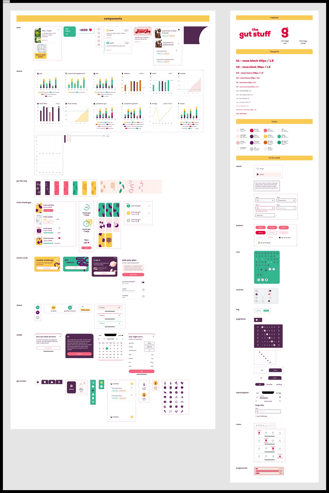
7. Визуализация результатов7. Visual output
До / После — ключевые экраныBefore / After — key screens
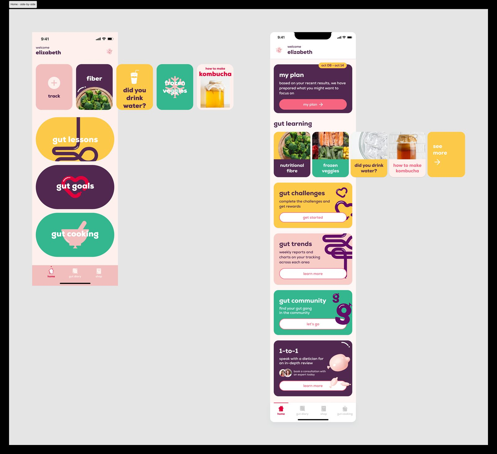
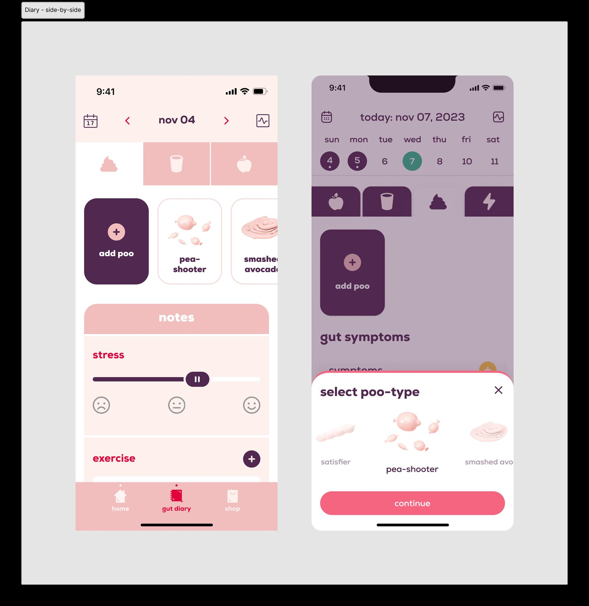
Дизайн-решения, которые определили продуктDecisions that defined the product
- Тон голоса: «умный друг с юмором» — тёплый визуальный язык вместо стерильно-медицинского.
- Прогресс как мотивация: micro-анимации подтверждения на каждом завершении — дофамин без игровых клише.
- Шкала Бристоля: клинический инструмент через понятные иллюстрации без cold-tone — образовательно и снижает барьер стыда.
- Tone of voice: “smart friend with humor” — warm visuals over sterile-medical.
- Progress as motivation: confirmation micro-animations on every completion — dopamine without game clichés.
- Bristol scale: a clinical tool via friendly illustrations, no cold tone — educational and shame-lowering.
8. Участие в процессе разработки8. Working with developers
Front ReviewFront review
Каждый спринт сверяла реализацию с дизайном (отступы, цвета, шрифты, анимации), баги — в трекер с приоритетами.
Every sprint compared build vs design (spacing, colors, type, animations); bugs filed with priorities.
Работа с командойTeamwork
Planning (design-effort оценки), Grooming (UX-декомпозиция), ретро (темы UX-логики). Принцип: разработчик — первый пользователь дизайна. Не понял экран без объяснений — моя ошибка.
Planning (design-effort estimates), grooming (UX decomposition), retros (UX-logic topics). Principle: the developer is design's first user. If they don't get a screen unexplained — my fault.
9. Результаты для пользователя и бизнеса9. User & business results
Продуктовые результатыProduct results
| Показатель | Результат |
|---|---|
| Загрузки в Google Play | 10 000+ |
| Динамика | +5 000 за 6–8 месяцев органики |
| Платформа | Android (Google Play) |
| Разработка | Год + год паузы на тест MVP (Oct 2022 — Nov 2024) |
| Фазы | MVP → V2 |
| Metric | Result |
|---|---|
| Google Play downloads | 10,000+ |
| Growth | +5,000 in 6–8 months, organic |
| Platform | Android (Google Play) |
| Timeline | A year plus a 1-year MVP-test pause (Oct 2022 — Nov 2024) |
| Phases | MVP → V2 |
Для пользователейFor users
- Закрыта пустая ниша: gut-tracker + обучение на одной платформе
- Онбординг персонализирует с первого экрана
- Геймификация встраивает трекинг в ритуал через подкрепление
- Filled an empty niche: gut tracker + learning on one platform
- Onboarding personalizes from screen one
- Gamification rituals tracking via positive reinforcement
Для бизнесаFor business
- Новый B2C-канал подписки (раньше — только физпродукты)
- Магазин с кросс-продажами без трения
- Задел V3: community, консультации врачей, referral clinic
- New B2C subscription channel (previously physical only)
- Frictionless cross-sell shop
- V3 groundwork: community, doctor consults, referral clinic
10. Фидбэк и аналитика10. Feedback & analytics
ЧелленджиChallenges
- Месяц на MVP — быстрые решения без полноценного исследования.
- Тема табу — баланс медицинской точности и бытовой доступности.
- 10 категорий — нескучный ввод: смысловые группы, каждый экран — мини-опыт.
- Провал iOS — не прошёл модерацию; UK сидит на Android. Урок: платформенные риски валидировать параллельно с дизайном.
- One-month MVP — fast calls, no full research.
- Taboo topic — balancing medical accuracy with everyday language.
- 10 categories — joyful input: semantic groups, each screen a mini-experience.
- iOS failure — rejected in review; UK leans Android. Lesson: validate platform risks alongside design.
Доказательства эффективностиProof of impact
«We didn't have anyone on our team with expertise in this field so JetRockets were amazing in listening to our vision and helping us create our MVP in a very quick amount of time. Implementing our ideas with efficiency and accuracy.»
Alana & Luisa Macfarlane — Founders, The Gut Stuff
«Everyone was super passionate about the project and even the CEO came on calls to discuss developments. We had a great experience and product, and we look forward to working with JetRockets on an ongoing basis.»
Alana & Luisa Macfarlane
Клиент стал долгосрочным партнёром — от разового MVP к многолетнему сотрудничеству.
“We didn't have anyone on our team with expertise in this field so JetRockets were amazing in listening to our vision and helping us create our MVP in a very quick amount of time. Implementing our ideas with efficiency and accuracy.”
Alana & Luisa Macfarlane — Founders, The Gut Stuff
“Everyone was super passionate about the project and even the CEO came on calls to discuss developments. We had a great experience and product, and we look forward to working with JetRockets on an ongoing basis.”
Alana & Luisa Macfarlane
The client became a long-term partner — from a one-off MVP to years of collaboration.